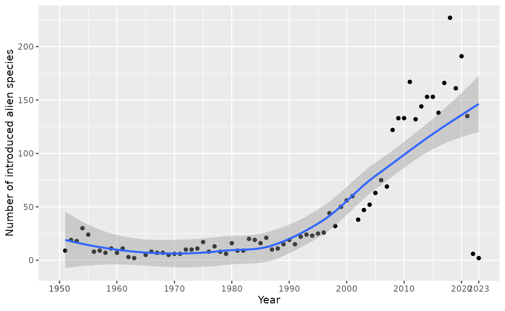
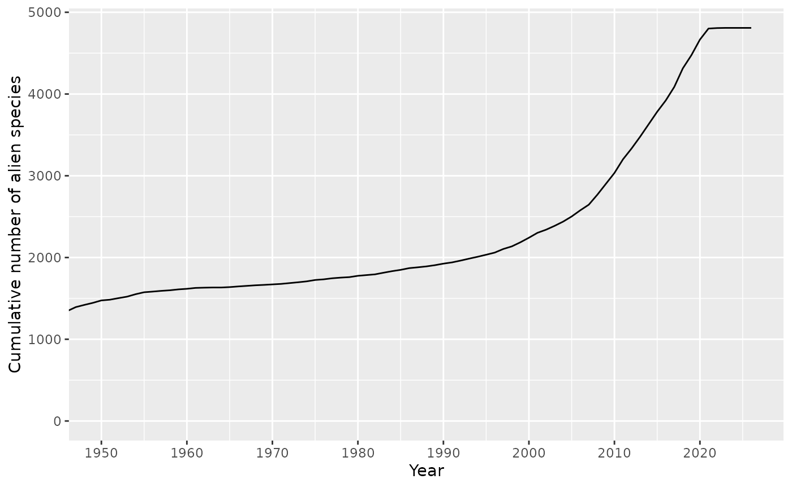
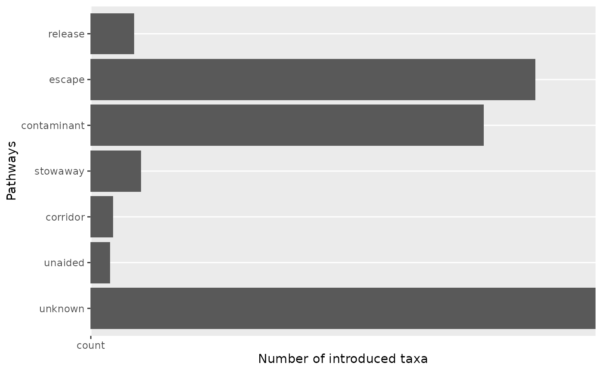
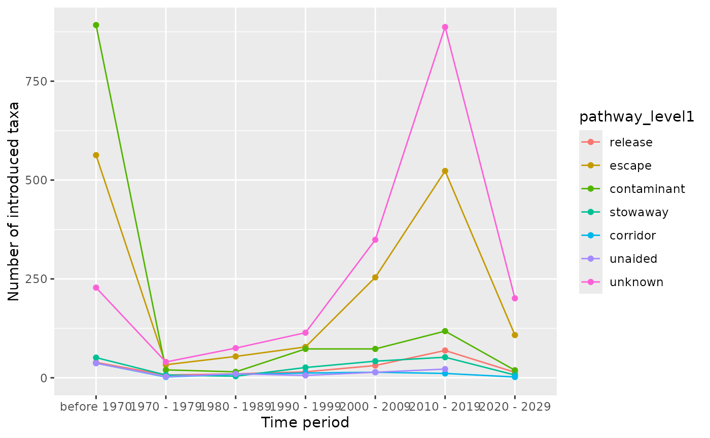
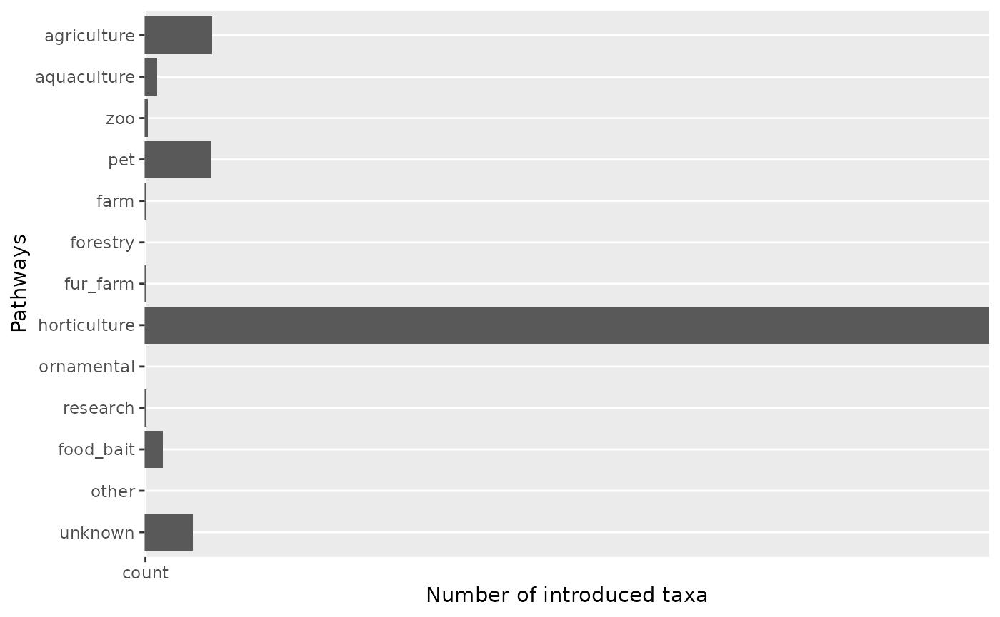
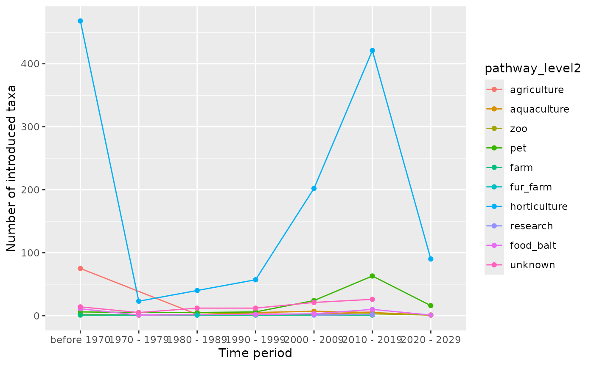

Checklist functions
Damiano Oldoni
Source:vignettes/checklist-functions.Rmd
checklist-functions.RmdThis vignette demonstrates the main checklist functions in the trias package for analyzing and visualizing alien species data.
Load data
We’ll use example data from the TrIAS indicators repository:
df <- read_tsv(
"https://raw.githubusercontent.com/trias-project/indicators/master/data/interim/data_input_checklist_indicators.tsv",
show_col_types = FALSE
)
# Preview the data
head(df)
#> # A tibble: 6 × 38
#> key nubKey scientificName datasetKey canonicalName species genus family
#> <dbl> <dbl> <chr> <chr> <chr> <chr> <chr> <chr>
#> 1 152543101 5740285 Gyrodactylus … 6d9e952f-… Gyrodactylus… Gyroda… Gyro… Gyrod…
#> 2 152543101 5740285 Gyrodactylus … 6d9e952f-… Gyrodactylus… Gyroda… Gyro… Gyrod…
#> 3 152543102 3202936 Aphanomyces a… 6d9e952f-… Aphanomyces … Aphano… Apha… Lepto…
#> 4 152543110 5179027 Scutigera col… 6d9e952f-… Scutigera co… Scutig… Scut… Scuti…
#> 5 152543110 5179027 Scutigera col… 6d9e952f-… Scutigera co… Scutig… Scut… Scuti…
#> 6 152543110 5179027 Scutigera col… 6d9e952f-… Scutigera co… Scutig… Scut… Scuti…
#> # ℹ 30 more variables: order <chr>, class <chr>, phylum <chr>, kingdom <chr>,
#> # rank <chr>, speciesKey <dbl>, genusKey <dbl>, familyKey <dbl>,
#> # orderKey <dbl>, classKey <dbl>, phylumKey <dbl>, kingdomKey <dbl>,
#> # taxonomicStatus <chr>, locationId <chr>, locality <chr>, country <chr>,
#> # status <chr>, first_observed <dbl>, last_observed <dbl>,
#> # establishmentMeans <chr>, degree_of_establishment <chr>,
#> # native_range <chr>, native_continent <chr>, habitat <chr>, marine <lgl>, …Time of introduction
Number of introductions per year
The indicator_introduction_year() function shows how
many new alien species were introduced each year.
# Plot number of new introductions per year
result <- indicator_introduction_year(
df = df,
start_year_plot = 1950,
smooth_span = 0.85
)
#> [1] "All column names present"
#> [1] "All column names present"
# Display the plot
result$plot
Cumulative number of alien species
The indicator_total_year() function displays the
cumulative number of alien species over time.
# Plot cumulative number of alien species
result <- indicator_total_year(
df = df,
start_year_plot = 1950
)
#> [1] "All column names present"
#> [1] "All column names present"
# Display the plot
result$plot
Native range
The indicator_native_range_year() function creates an
interactive visualization showing the number of alien species per native
region and year of introduction.
# Plot species by native range over time
result <- indicator_native_range_year(
df = df,
type = "native_range",
response_type = "absolute"
)
#> [1] "All column names present"
#> [1] "All column names present"
# Display the plot
result$plot
#> NULLPathways of introduction
Pathway data
The package includes the pathwayscbd dataset containing
CBD standard pathways at level 1 and level 2.
# View available CBD pathways
pathwayscbd
#> # A tibble: 51 × 2
#> pathway_level1 pathway_level2
#> <chr> <chr>
#> 1 release biological_control
#> 2 release erosion_control
#> 3 release fishery
#> 4 release hunting
#> 5 release landscape_improvement
#> 6 release conservation
#> 7 release use
#> 8 release other
#> 9 release unknown
#> 10 escape agriculture
#> # ℹ 41 more rowsVisualize pathways at level 1
The visualize_pathways_level1() function creates bar
graphs showing the number of taxa introduced through different CBD
pathways at level 1.
# Visualize pathways level 1
result <- visualize_pathways_level1(
df = df,
category = NULL,
from = NULL
)
#> [1] "All column names present"
#> [1] "All column names present"
#> [1] "All column names present"
#> [1] "All column names present"
#> [1] "All column names present"
# Display the plot
result$plot
Visualize pathways over time at level 1
The visualize_pathways_year_level1() function shows
pathway trends over time.
# Visualize pathways level 1 over time
result <- visualize_pathways_year_level1(
df = df,
bin = 10,
from = 1970
)
#> [1] "All column names present"
#> [1] "All column names present"
#> [1] "All column names present"
#> [1] "All column names present"
#> [1] "All column names present"
# Display the plot
result$plot
Visualize pathways at level 2
The visualize_pathways_level2() function creates bar
graphs for CBD pathways at level 2 for a specific level 1 pathway.
# Visualize pathways level 2 for "escape"
result <- visualize_pathways_level2(
df = df,
chosen_pathway_level1 = "escape",
category = NULL
)
#> [1] "All column names present"
#> [1] "All column names present"
#> [1] "All column names present"
#> [1] "All column names present"
#> [1] "All column names present"
#> [1] "All column names present"
# Display the plot
result$plot
Visualize pathways over time at level 2
The visualize_pathways_year_level2() function shows
level 2 pathway trends over time for a specific level 1 pathway.
# Visualize pathways level 2 over time
result <- visualize_pathways_year_level2(
df = df,
chosen_pathway_level1 = "escape",
bin = 10,
from = 1970
)
#> [1] "All column names present"
#> [1] "All column names present"
#> [1] "All column names present"
#> [1] "All column names present"
#> [1] "All column names present"
#> [1] "All column names present"
# Display the plot
result$plot
Pathway count table
The get_table_pathways() function creates a summary
table with the number of taxa per pathway and example species.
# Get pathway count table
pathway_table <- get_table_pathways(
df = df,
category = NULL,
from = NULL,
n_species = 5
)
#> [1] "All column names present"
#> [1] "All column names present"
# Display first rows
head(pathway_table)
#> # A tibble: 6 × 4
#> pathway_level1 pathway_level2 n examples
#> <chr> <chr> <int> <chr>
#> 1 contaminant animal_parasite 3 Mastophorus, Enderleinellus kumadai, Ho…
#> 2 contaminant food 1 Chaetopelma olivaceum
#> 3 contaminant habitat_material 102 Centaurea psammogena, Odontites jaubert…
#> 4 contaminant nursery 24 Oenanthe pimpinelloides, Euphorbia hype…
#> 5 contaminant on_animals 560 Juncus foliosus, Panicum antidotale, Le…
#> 6 contaminant on_plants 35 Ferussacia folliculum, Branchiodrilus h…Additional resources
For more information on individual functions, see the Reference page.